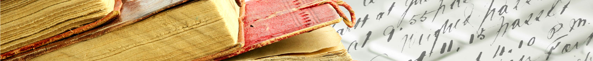
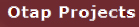

Home
The autotagger
Acknowledgements
Resources
Staff Pages
About Us
Supporters

To learn more go
here
Resources
Images
Special Bibliography
Habib K. Chiha's La Province de Bagdad
- Cairo 1908
Chiha's monograph is a public domain resource that we've made available here.
Jirair (Jerry) Kouyoumdjian's The Kouyoumdjians
- 1988
A History and Reminiscences compiled and written by J. Kouyoumdjian
Margaret Makiya's "The Svoboda Diaries"
- Baghdad College of Art Journal, June 1969
An article about the Svoboda Diaries written by M. Makiya.
Alois Musil's The Middle Euphrates
- New York 1927
Musil's Topographical Itinerary, Oriental Explorations and Studies No. 3, American Geographical Society
Alois Musil's Palmyrena
- New York 1928
Musil's Topographical Itinerary, Oriental Explorations and Studies No. 4, American Geographical Society
Thomas Thornton, Esq.'s The Present State of Turkey
- London 1809
An electronic version from the Electronic Text Archive
Alexandre Csoma de Körös in His Voyage through Asia
An electronic version from the Central and East European Online Library
Campbell's My Life and Some Letters
- New York 1922
Tannner Svoboda
Sykes' Through Five Turkish Provinces
- London 1900
Mark Sykes
le Calloch's Anton Swoboda: Le Slovaque Généreux
- City Date
Bernard Le Calloch
Copyright © 2013 Newbook Digital Text in the Humanities. All Rights Reserved.
PRIVACY
|
TERMS
|
STAFF CENTER LOGIN